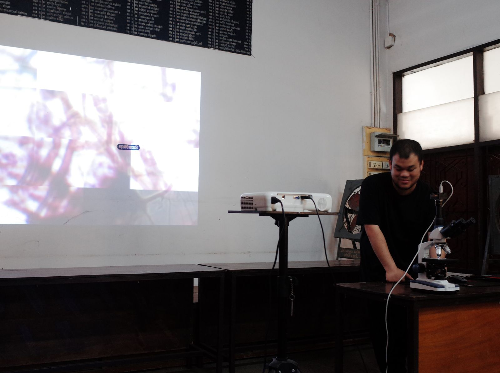
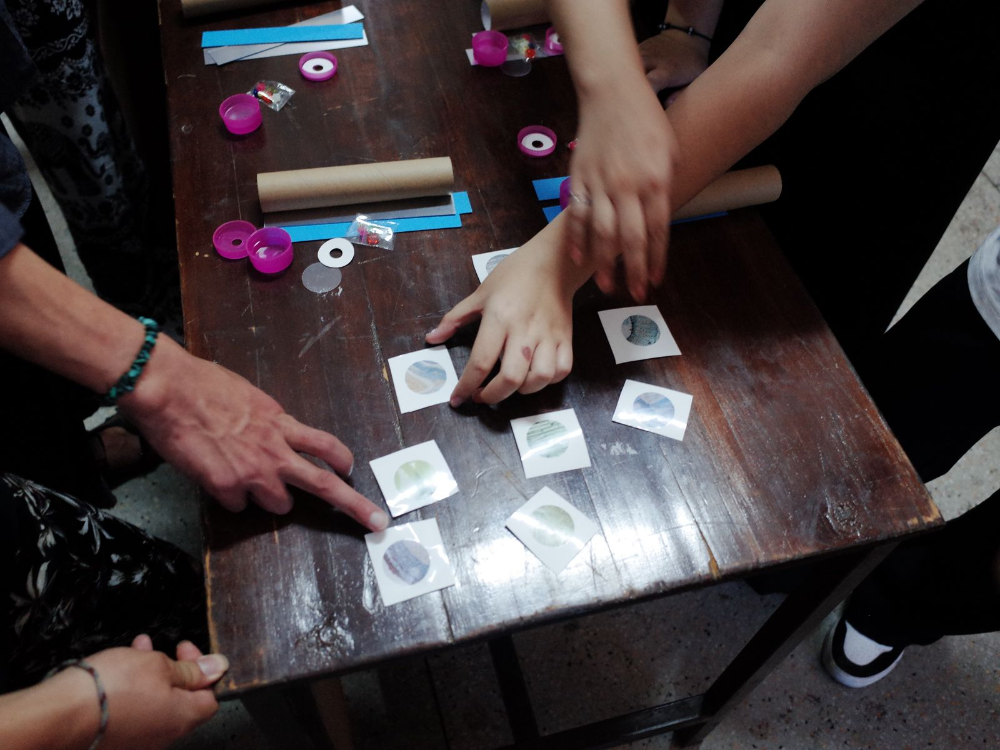
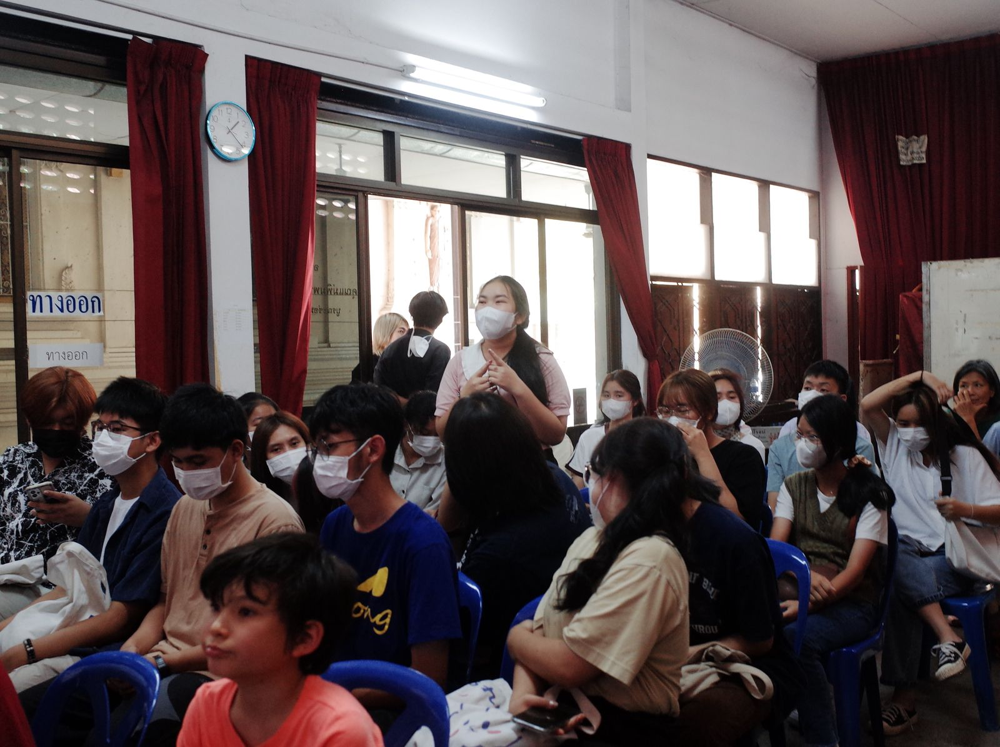
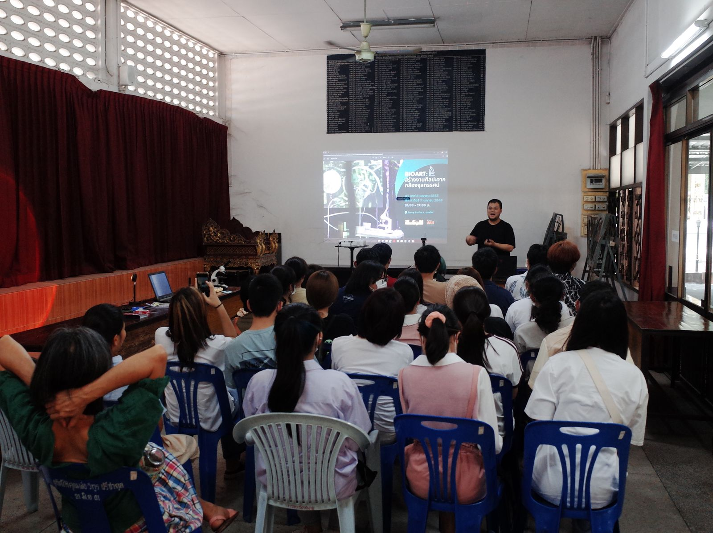
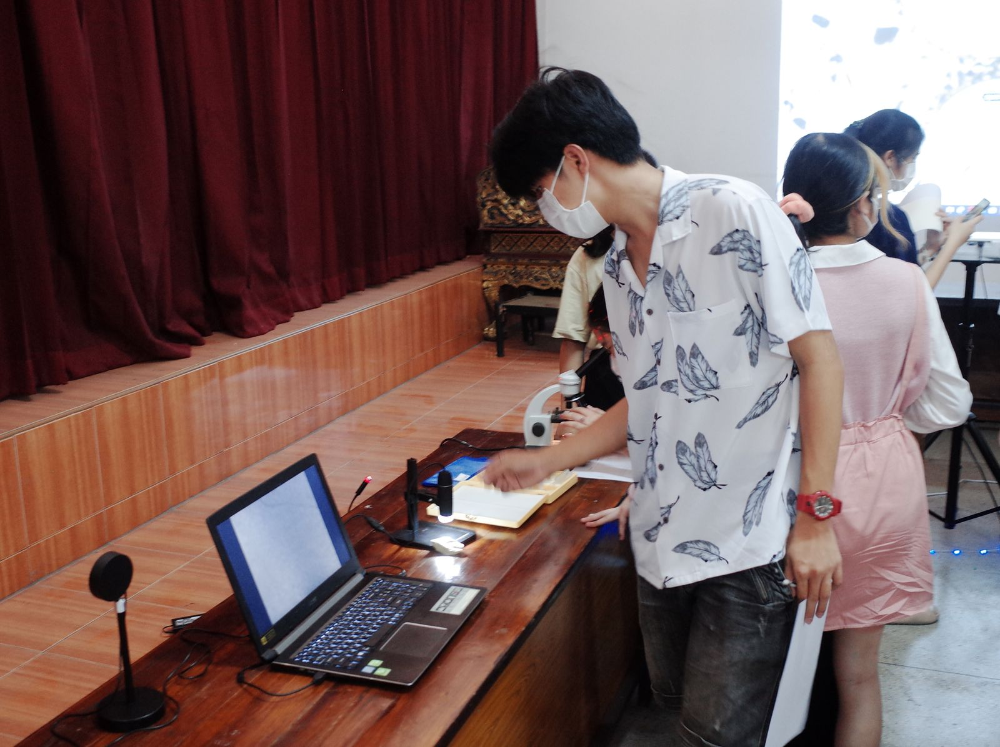
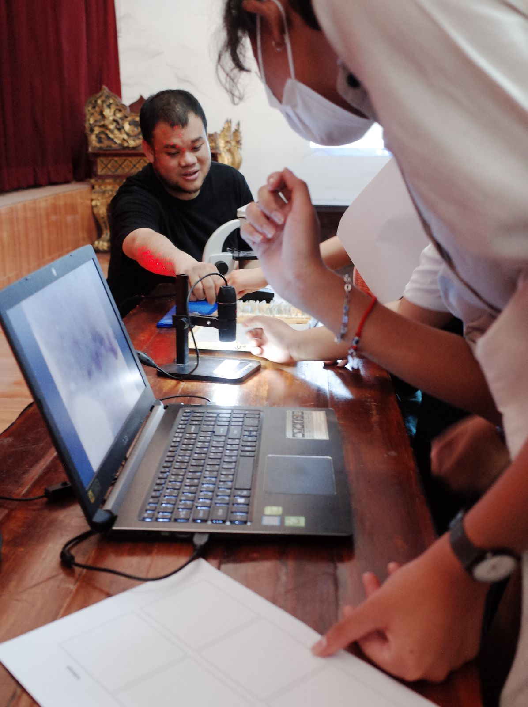
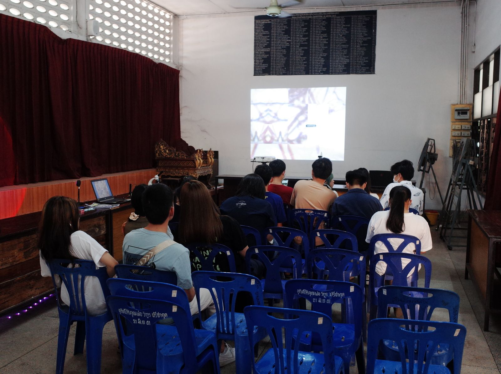

A youth workshop that turns the microscope into an art tool: children explore microscopy and build light devices such as kaleidoscopes, reframing a science activity as artistic practice.






Photos: Krai Sridee